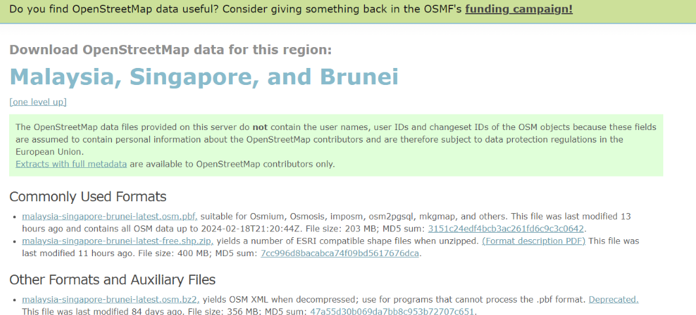
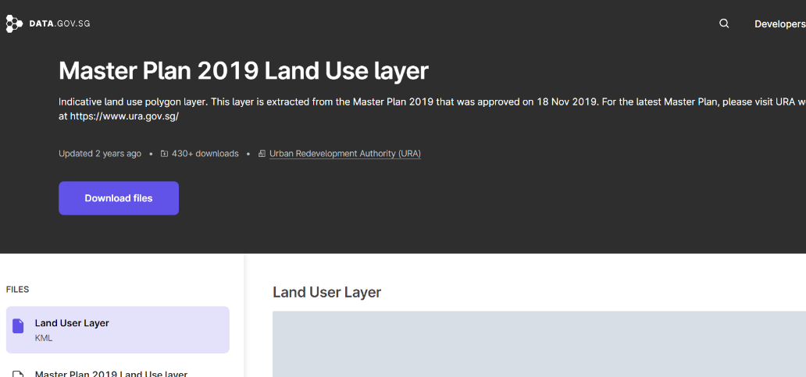
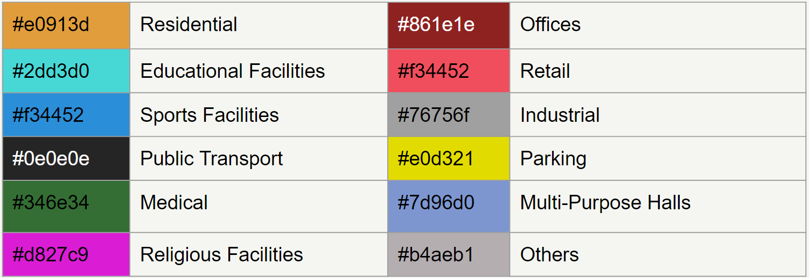
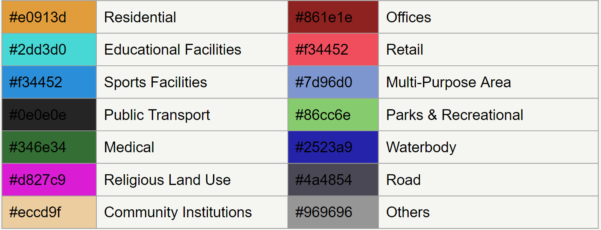
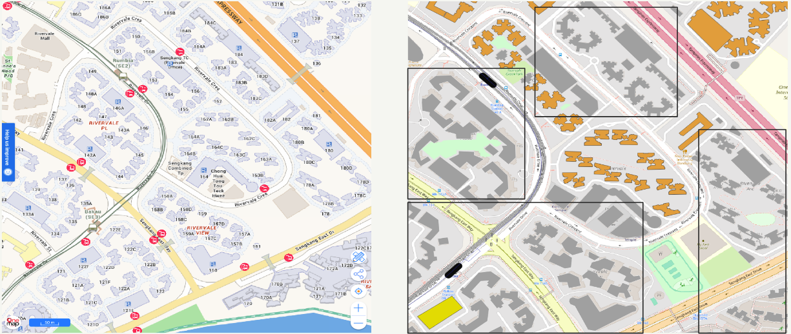
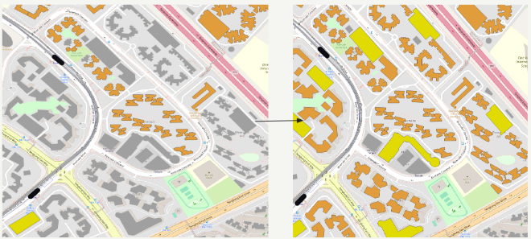

SMT Data Exploration
Data Exploration
Datasets Used
HDB Property Information
Source: https://beta.data.gov.sg/collections/150/viewOpenStreetMap (OSM) data (Malaysia, Singapore, and Brunei dataset)
Source: https://download.geofabrik.de/asia/malaysia-singapore-brunei.html
Urban Redevelopment Authority (URA) datasets
Source: https://beta.data.gov.sg/collections?agencies=Urban%20Redevelopment%20Authority%20(URA)Master Plan 2019 Land Use Layer
Master Plan 2019 Subzone Boundary (No Sea)
Master Plan 2019 Planning Area Boundary (No Sea)

Data Cleaning
Re-categorizing types of buildings & land use and color coding the data (QGIS)
Buildings

Land Use

Re-labelling data points that were inaccurately labelled (QGIS)

- In the above maps, many buildings in the dataset are not correctly categorised as shown in the one map. Even though many of the identified buildings are residential and carpark buildings, they are labelled as null values which have been colored in grey.

Therefore, there is a need to manually adjust the categories of buildings to their respective correct ones within QGIS.
- In the above maps, many buildings in the dataset are not correctly categorised as shown in the one map. Even though many of the identified buildings are residential and carpark buildings, they are labelled as null values which have been colored in grey.
Data Analysis
Identify the average age of HDB estates by towns (Tableau)
Land use analysis of HDB estates (QGIS)
Isotope areas around the key amenities and public transport (QGIS)
Data Integration
- Manually inserting the desired lines into the paths layer in the dataset (QGIS)